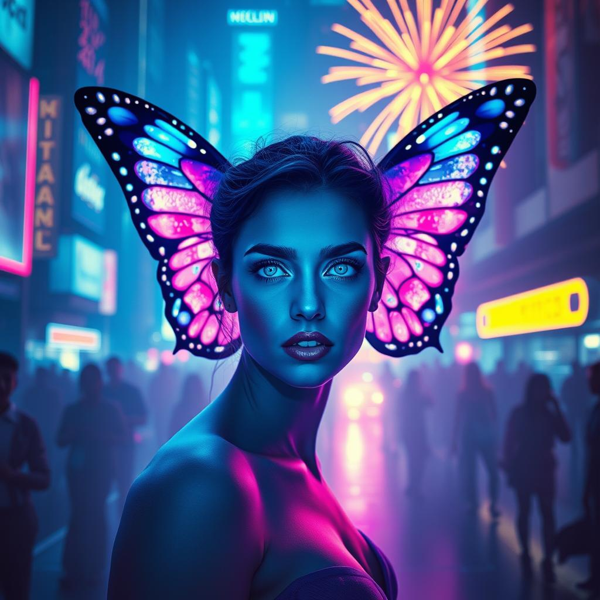

A striking fusion of organic beauty and urban chaos. The subject appears as a modern-day
fae creature, wearing her metamorphosis like high fashion
BPM Range
90–110
Scene Count
8
Color Scheme
Cyan/Magenta
Style
Urban Fantasy
Final Result
Urban metamorphosis in neon light
The Original Song
A delicate Sinhala love ballad reimagined as a sassy pop-rap dancefloor anthem
රහසින් ඇවිත් මුමුනා ගියා (Rahasin Awith Mumuna Giya) — Whispered Softly and Left
This project is built around "රහසින් ඇවිත් මුමුනා ගියා" by Surenie De
Mel — a soft, dreamlike Sinhala ballad about a mysterious visitor who whispers sweet words
and vanishes. The song is all blue-eyed gazes, secret smiles, and longing for someone who appears only
in fragments. I reimagined it by flipping the gentle yearning into fierce, confident energy —
transforming the whispered plea into a 2026 Pop-Rap Disco-Trap fusion with Megan-style aggressive
verses, Doja-style melodic flows, and a full instrumental dance break.
From whispered Sinhala ballad to sassy pop-rap dancefloor anthem
Creative Process
The reimagination completely inverted the song's emotional polarity while preserving its core imagery:
translating the lyrics transformed gentle yearning into fierce, confident declarations
— the blue eyes still watch, but now with power not vulnerability, restructuring the
flow into a multi-style format with aggressive "Megan-style" rap verses, fast "Doja-style"
melodic flows, a high-speed verse 3, and a full instrumental dance break, and reimagining the
sonic palette from a delicate acoustic ballad to a 2026 Disco-Trap fusion — groovy
basslines, beat switches to half-time, siren FX, and maximum-energy club production.
[Intro - The Original Sample Plays
Here][Instrumental Transition - Heavy Bass Drop & Siren FX]
(Yeah... MWS... We going all night)
(Turn the bass up!)
[Verse 1 - Rap - "Megan Style" Flow - Aggressive & Sassy]
Okay, she said it sweet, but I'm bringing the heat
Old school vibe with a brand new beat
He lookin' at me with those eyes so blue
But I need more than a peek-a-boo!
Where you go? Did you dip? Did you ghost?
I'm the queen of this scene, doing the most
Blue eyes, big lies, but the smile is fire
You're the only bad boy that I truly desire!
(Check the switch up...)
[Pre-Chorus - Melodic Build Up]
I saw your face...
(Don't make me chase...)
Come back to my space.
You know I need that...
[Chorus - Melodic Pop - Groovy]
With those blue eyes watching, smile so sweet
Whispering secrets to the beat
Holding your love inside my chest
You're the dream, you're the best!
[Verse 2 - Rap - "Doja Style" Flow - Fast & Melodic]
I float like a butterfly, flower to flower
Open up the window, yeah I'm feelin' the power
Whatever you wish, yeah I wish it for me
That's the kind of love that we need to see!
Open the gates, let me look inside
Ain't no secrets left, ain't nowhere to hide
You're the wish, you're the want, you're the prize
I can see the whole world in your deep blue eyes!
[Dance Break - Instrumental Trap Beat - 15 Seconds]
(Let the beat breathe...)
(Go... go... go...)
(Work it out!)
[Verse 3 - New Section - High Speed Flow]
Wait a minute, let me slow it down, then speed it up
Got the magic in the potion, sipping from the cup
If you leave me lonely, I'ma start a riot
I don't do silence, I don't do quiet!
Blue eyes flashing like a neon sign
I'ma count to three, make you mine, mine, mine!
One, two...
(Make your move!)
[Final Chorus - Maximum Energy - Ad-libs & Layers]
With those blue eyes watching, smile so sweet!
(So sweet!)
Whispering secrets to the beat!
(To the beat!)
Holding your love inside my chest
You're the dream, you're the best!
[Outro - Extended Fade]
(Yeah...)
(Blue eyes...)
(Don't you look away...)
(MWS... We out.)
[End]
"The Neon Chrysalis" explores a provocative concept: what if the vibrant colors of nature's most
beautiful transformations—butterfly metamorphosis—evolved to mimic the artificial neon of urban
environments? The project presents a modern-day fae creature who wears her chrysalis state not as a
cocoon of hiding, but as high-fashion armor in the urban jungle. She is both camouflaged and
conspicuous,
blending into the neon-soaked cityscape while simultaneously commanding attention through her organic
beauty.
The Metamorphosis Metaphor
The butterfly wings extending from her temples—rather than her back—transform a biological process
into fashion statement and headpiece. This unconventional placement frames her face, ensuring the
wings never compete with her presence but instead enhance it, creating a living halo of iridescent
motion. The chrysalis isn't something she's escaping; it's something she's chosen to inhabit,
claiming the liminal space between transformation states as permanent identity.
Prompt Strategy: Bi-Chromatic Focus
The project utilized a strict "Bi-Chromatic Focus" strategy, limiting the lighting scheme to cyan and
magenta exclusively. This dual-color approach creates immediate visual coherence between the subject's
wings and the urban environment—the wings don't feel like foreign fantasy elements but rather natural
extensions of the neon-lit cityscape. By restricting the palette, every element reinforces the central
concept: organic beauty that has adapted to artificial environments.
Technical Precision: The prompts emphasized specific camera settings ("85mm lens at
f/1.8 aperture") to ensure the busy crowd background remained visible but non-distracting. The
shallow depth of field isolates the subject while the out-of-focus crowd provides context and scale,
creating the sense that she exists both within and apart from the urban masses.
Iterative Refinement: From Back to Head
Early iterations placed butterfly wings on the subject's back—the traditional fantasy approach. However,
these became visually lost in the crowded background, failing to frame the face effectively. The
critical
breakthrough came from adjusting the prompt to specify "wings extending from temples" or "butterfly wing
headpiece," which transformed the wings from decorative appendages into integral facial framing devices.
This placement ensures the wings always enhance rather than obscure the subject's expression and eye
contact.
Similarly, crowd density underwent extensive experimentation. Too sparse and
the urban context felt empty; too dense and the subject disappeared into noise. The solution involved
prompting for a "blurred background crowd" that provides atmospheric depth without competing for focus,
keeping the subject isolated despite the busy setting—a visual metaphor for urban loneliness and
individuality within masses.
Tools & Technology
The technical ecosystem behind the transformation
Nano Banana Pro
Veo 3.1
Gemini Flow
Topaz Gigapixel
DaVinci Resolve
SUNO Pro
Canva
Visual Metamorphosis
Capturing the neon chrysalis in its urban habitat

Image 01
The Temple Wings Portrait
The definitive portrait showcasing the temple-mounted butterfly wings that frame her face like a
living crown. The cyan and magenta neon lighting bathes her in bi-chromatic glow, perfectly
matching the iridescent wings. Her confident gaze pierces through the camera while the blurred
crowd background provides urban context without distraction. This composition demonstrates the
successful resolution of wing placement—they enhance rather than obscure her presence, creating
visual hierarchy that guides the eye directly to her expression. The shallow depth of field
isolates her from the urban masses while the neon color palette unifies organic and artificial
elements.
Image 02
Neon Street Context
A wider environmental shot revealing the full urban nightscape that serves as her domain. Neon
signs in cyan, magenta, and violet create the artificial forest through which this modern fae
creature moves. Light mist diffuses the neon glow across wet pavement, adding atmospheric depth.
Crowd silhouettes populate the background, their movement suggesting life and energy without
stealing focus. This frame establishes the "urban camouflage" concept—her butterfly wings don't
look out of place in this neon-saturated environment but rather appear as natural adaptations to
the artificial ecosystem. The color temperature and saturation levels demonstrate how the
bi-chromatic strategy creates visual cohesion across all elements.
Scene-by-Scene Breakdown
Rhythmic choreography for the butterfly dance
Musical Foundation
BPM Range: 90–110 beats per minute | Genre: Mid-tempo electronic/dance
with deep bass and soft synth pulses
Each scene is choreographed to create hypnotic, loopable sequences that sync
with electronic music's rhythmic structure. The butterfly wings serve as visual percussion instruments,
their movements accenting beats and creating synesthetic synchronization between sound and motion. The
fixed camera position maintains cinematic stability while allowing the subject's subtle movements and
wing animations to provide all necessary dynamism.
Scene 01
Intro Beat (0:00–0:05)
Environmental Establishment
Scene fades in from black, revealing the neon city street at night. Light mist hangs in the air,
diffusing neon signs that flicker on gradually—pink, cyan, violet. Crowd silhouettes begin slow,
natural pedestrian movement, walking left-to-right and right-to-left in the background.
Fireworks
bloom softly in the distant sky with slow, elegant bursts, adding celebratory atmosphere without
overwhelming the composition.
Lighting Design
Ambient blue-purple glow establishes the base tone. Subtle light reflections shimmer on wet
pavement, grounding the fantastical elements in physical reality.
Purpose
Sets the atmospheric foundation and introduces the urban environment before the subject appears.
Creates anticipation.
Scene 02
Wing Activation
Wing Animation
Butterfly wings begin rhythmic motion perfectly synced to the beat. Small flutters occur on every
second beat, creating visual syncopation. Color shifts ripple across the wings: pink → blue →
violet, cycling through the bi-chromatic palette. Tiny glowing particles drift from the wings
like digital dust or bioluminescent scales. Fireworks subtly intensify in the background,
responding to the increasing energy.
Subject Movement
Slow head tilt initiates movement. One hand lifts slightly with fingers relaxed, suggesting
gentle
control. A soft body wave synchronized to the bass line demonstrates her connection to the
rhythm.
Scene 03
Peak Energy
Beat Intensity
The strongest rhythmic section. Musical elements reach maximum presence.
Movement Choreography
She leans slightly forward in engagement, then settles back to neutral. Hips sway gently side to
side with controlled sensuality. Her eyes stay locked toward camera throughout—confident,
alluring, completely composed. The eye contact never breaks, creating psychological connection
with viewers.
Lighting Response
Neon lights pulse in perfect time with the beat, transforming the environment into visual rhythm
section. Brief light flares pass across the lens with subtle, cinematic quality. Wings glow at
maximum brightness during the beat drop, then soften gradually, breathing with the music.
Scene 04
Wind Down
Deescalation
Movement slows deliberately, creating resolution. Wings gradually fold inward while still
maintaining a faint glow. Crowd continues their walking patterns, uninterrupted—they remain
unaware of the transformation occurring in their midst. Fireworks fade from the sky. Neon signs
dim slightly, returning to ambient levels. She holds still with only breathing visible. Eyes
remain calm and present.
Closing
Music fades to silence. Screen slowly fades to black, completing the cycle.
Scene 05
Flashback / Memory Beat (6–10s)
Purpose
Flashback sequence, memory moment, or beat transition. Camera remains fixed at same angle as main
scene. Music continues with instrumental loop or filtered bass.
0:00–0:02 | Entry Hit
Hard beat or soft whoosh transition marks the entry. Neon lights spike brighter for a single
frame, creating flash effect. Crowd motion slows slightly, becoming almost dreamlike. Background
blur increases subtly. Visual feel shifts to slight glow haze. Colors lean more toward pink and
electric blue.
0:02–0:05 | Dance Loop Core
Body Wave: She performs a slow, sensual body wave: shoulders rise → chest → hips
→ settle. One knee bends slightly as weight shifts. Head tilts back a little with eyes
half-closed in introspective moment.
Butterfly Wings: Flutter faster than main scene. Wing tips vibrate lightly with
each bass hit. Neon veins pulse outward from the wing centers, creating rippling light patterns.
0:05–0:08 | Memory Moment
She rotates her shoulders smoothly. One hand lifts to neck or collarbone in soft, elegant touch.
Hips sway once—clean and controlled. Expression conveys confidence, intimacy, almost teasing
quality. Brief neon streak passes behind her in the background. Firework reflection flashes
faintly across the wings.
0:08–0:10 | Exit
Wings freeze for half a second. Neon glow drops suddenly. Crowd speed returns to normal pace.
Quick crossfade or beat-cut transition back to main scene.
Scene 06
Beat Accent / Visual Punctuation (7–12s)
Purpose
Flashback moment, beat accent, or visual punctuation. Camera fixed with same framing. Music track
continues with clearer percussion and sharper beat definition.
0:00–0:02 | Beat Snap In
Quick neon flicker—single-frame flash. Background crowd continues walking but motion feels more
defined and intentional. Fireworks pause for a moment, making the city feel tighter and more
compressed. Lighting shows stronger contrast. Cyan and magenta dominate completely. Neon edges
appear sharper and more defined.
0:02–0:05 | Controlled Groove
She performs a sharp shoulder pop: left → right. Small hip bounce on the second beat. Chin lifts
slightly showing confident, unbothered expression. Butterfly wings execute short, precise flaps.
Wing glow pulses only on bass hits. Wing edges glow white for one frame, then return to neon
colors.
0:05–0:08 | Attitude Move
She steps half-forward with very small movement. Slow body lean followed by return to center. One
hand slides down her side, then stops at the hip. Direct eye contact with camera maintained.
Subtle smirk or relaxed lips. Calm but powerful presence radiates.
0:08–0:11 | Power Pose
Hips sway once—clean and grounded. Shoulders settle back into strong posture. Wings open wider
than usual, then hold in display position. Neon signs in background pulse together once in
synchronization. Crowd silhouettes pass behind her shoulders, creating layered depth.
0:11–0:12 | Cut Out
Beat hits hard. Wings snap into a slow hover, suspended. Instant hard cut or glitch-cut
transition to next scene.
Scene 07
Emotional Pause / Slow Build (8–14s)
Purpose
Flashback, emotional pause, or slow build section. Camera remains fixed with unchanged framing.
Music track continues but filtered with low-pass filter and soft echo.
0:00–0:03 | Time Stretch In
Beat fades into muffled pulse. Entire scene feels slightly slow-motion (90–92% speed). Neon
lights soften with glow spreading wider. Crowd walking continues but feels distant and
dreamlike. Light fog thickens near the ground. Colors shift toward violet, deep blue, and soft
pink.
0:03–0:07 | Floating Dance
She begins slow torso rotation: chest circles gently. Shoulders remain relaxed. Hips follow
naturally with barely noticeable movement. Head leans to one side with eyes soft and unfocused.
Butterfly wings don't flap yet—they breathe. Glow expands and contracts slowly like respiration.
Light ripples move across the wings like liquid neon.
0:07–0:10 | Intimate Motion
One arm rises slowly. Fingers trace the air near her neck or jawline. Small body wave moves
downward with control and elegance. Expression remains calm, introspective, sensual without
effort. Lips slightly parted. Slow breathing becomes visible.
0:10–0:13 | Wing Awakening
Wings begin ultra-slow flutter: one smooth open-close cycle. Neon veins brighten briefly, then
dim. A faint firework glow reflects across the wing surfaces.
0:13–0:14 | Memory Release
She returns to neutral pose. Glow fades slightly. Sound filter lifts, restoring normal audio.
Clean cut back to main timeline.
Scene 08
Flashback Spark / Beat Connector (5–9s)
Purpose
Flashback spark, beat connector, or visual hook. Camera fixed with same composition. Music track
continues percussion-forward with hi-hat and clap emphasis.
0:00–0:01 | Quick Ignition
Single-frame neon flash: cyan → pink. Crowd motion stays at normal speed. Fireworks pop briefly
in far background. Feel is crisp, energetic, clean.
0:01–0:04 | Playful Groove
She performs small bounce-step in place. Knees bend slightly. Weight shifts right → left. Subtle
shoulder shimmy synced to hi-hats. Head nods gently with the rhythm. Butterfly wings execute
light, fast flutter. Wing edges sparkle briefly on each beat. Glow is tighter with less bloom.
0:04–0:06 | Attitude Flick
Quick hip pop—single, controlled. Chin tilts upward. Eyes glance slightly past camera, then snap
back. Neon signs pulse once together. Reflections slide across wet pavement.
0:06–0:08 | Mini Pose
She settles into relaxed pose: one hip weighted. Shoulders open. Wings spread just a little
wider, then pause mid-air in suspension.
0:08–0:09 | Snap Out
Percussion hit punctuates. Wing sparkle fades instantly. Hard cut or beat-cut back to main scene.
Technical Insights & Reflections
Lessons from creating the urban chrysalis
The Power of Color Restriction
The bi-chromatic cyan/magenta strategy proved transformative. By limiting the palette so strictly, every
element in the composition—from wings to neon signs to lighting—speaks the same visual language. This
creates immediate coherence that allows fantasy elements (butterfly wings) to feel native to realistic
environments (city streets). The restriction paradoxically creates freedom: editors can combine any
scenes knowing the color palette will always match perfectly.
Wing Placement as Framing Device
The decision to move wings from back to temples exemplifies how small prompt adjustments yield massive
compositional improvements. Temple-mounted wings serve triple function: they frame the face like a
crown,
they remain visible from frontal camera angles, and they create visual hierarchy that guides viewer
attention directly to the subject's expression. This placement transforms wings from decorative elements
into integral facial framing that enhances rather than competes with the subject's presence.
Camera Settings as Prompt Language
Including specific technical camera specifications ("85mm lens at f/1.8 aperture") in prompts proved
essential for achieving consistent shallow depth of field. These technical terms communicate clearly to
the AI what type of focus falloff and background blur to generate. This precision prevents the common
problem of cluttered backgrounds stealing focus—the crowd remains contextually present but visually
subordinate, creating isolation within urban density.
Rhythmic Choreography for Loopable Sequences
Designing each scene as a beat-synchronized loop required thinking like a music video editor from the
start. Rather than linear narrative progression, each scene functions as a self-contained visual rhythm
that can repeat seamlessly or combine with others. The wing animations serve as visual percussion—their
flutters, color shifts, and glow pulses accent musical beats, creating synesthetic experience where
viewers "see" the rhythm even before audio plays.
Project Legacy: "The Neon Chrysalis" demonstrates that successful AI-generated fantasy
requires not more complexity, but more constraint. The bi-chromatic palette, fixed camera position,
temple-wing placement, and specific technical terminology all represent deliberate limitations that
paradoxically yield greater coherence and impact. The project proves that urban fantasy works best when
organic elements adapt to artificial environments rather than fighting against them—the butterfly
doesn't
conquer the city; she becomes native to it, wearing neon like plumage evolved for concrete jungles. Most
significantly, the modular scene structure shows that AI video generation excels at creating loopable,
beat-synchronized sequences for music video applications where hypnotic repetition and rhythmic
variation
matter more than traditional narrative continuity.